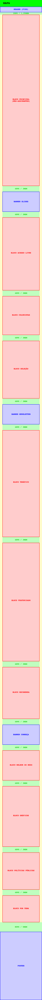
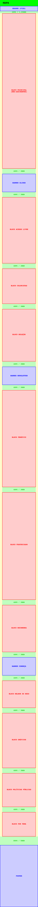

nexo journal's new home page
nexo jornal — 2021 [in deployment]
Nexo's new home is one of the biggest projects of the newspaper's art team. The home page that was live had been designed in 2016, and readapted in 2019, but it no longer corresponded to the production of the Nexo newsroom, and also to the new ways of browsing and consuming online journalism.
Intensive research and prototyping work was carried out, led by Guilherme Falcão. The page was designed side by side with the editors of Nexo, to understand their demands: to create a dynamic page that responds to the events and daily production of the newspaper, and that can be modified simply and quickly, as the rhythm of a newspaper requires.
The work was also carried out together with the team of developers, so that we understood the possibilities of the CMS and the React library. The layout was designed to match the backend updates in the technology team's planning.


building
My main assignment in the project is as a bridge between the designed layout and the programming team — transforming an initial design into a ready-to-develop layout.
The page structure has been divided into large modules, which can be repositioned by editors. Each module has specific positions, the components, which can be occupied by any Nexo content. Within these positions, the content is shown following the visualization rules for each component.


Division of the home into modules, made up of components
Components with background colors or colored details adapt to the color of the content type that occupies their position, according to the newspaper's color palette.
Some modules, like the main block, have more than one layout possibility, being able to give great prominence to a bombshell, for example.
 

Map of the construction of the home through the modules
In addition, rules were developed so that the layout of the content on the home page defined by the editors adapts to any screen of any size — without loss of hierarchy or content. Responsive grid repositions components automatically.

Grid planning and component responsiveness
final layout
The result of the work can be seen in the video below. The new home of Nexo is being implemented by the technology team - who decided to make a gradual development. The first block is already online.
This project was developed using the Adobe Xd, with joint layout and direction by Guilherme Falcão